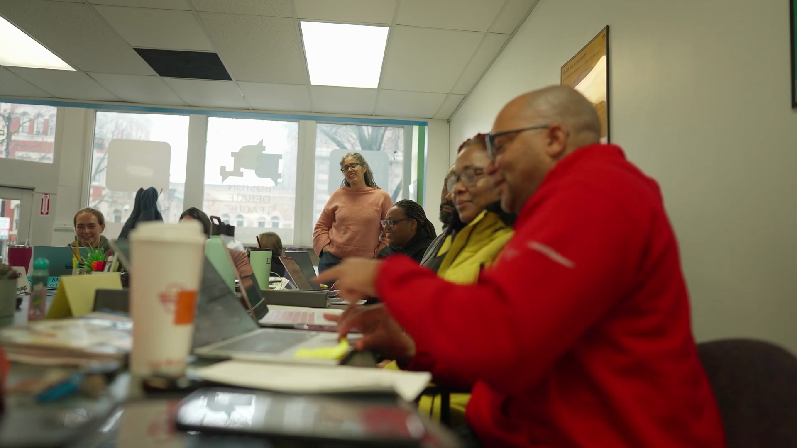
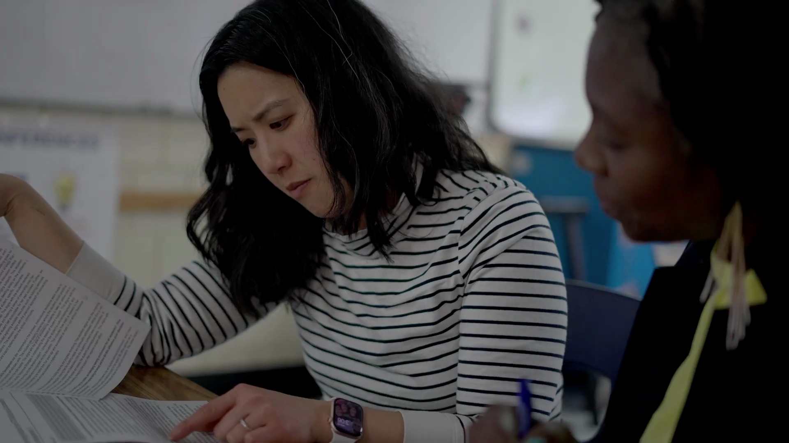
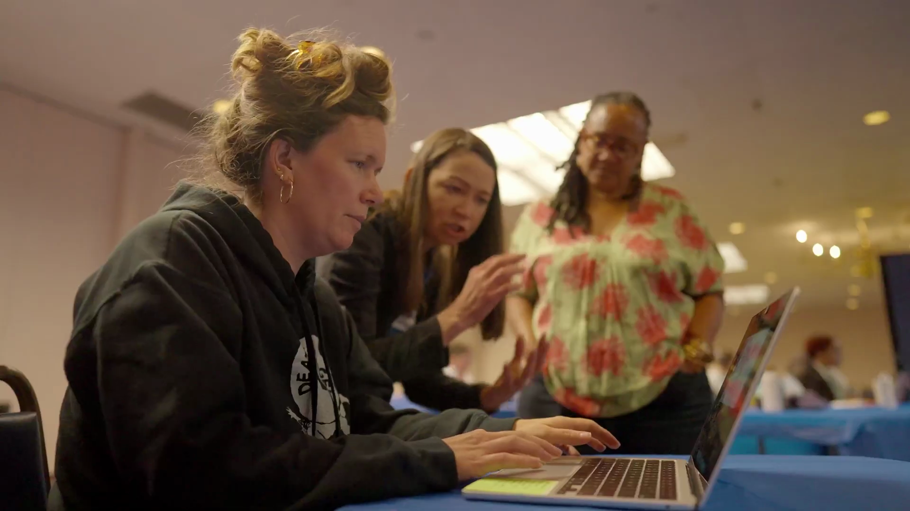
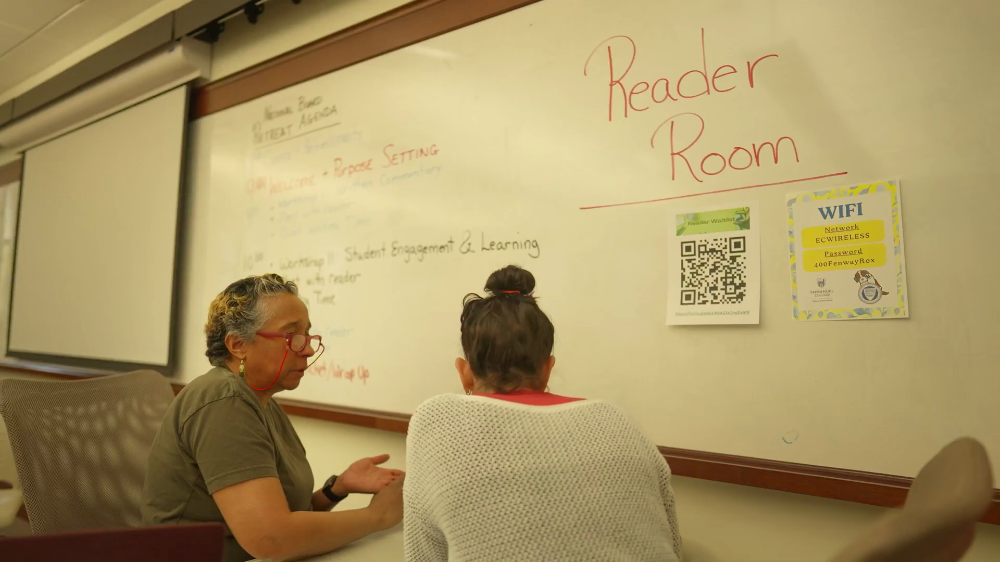
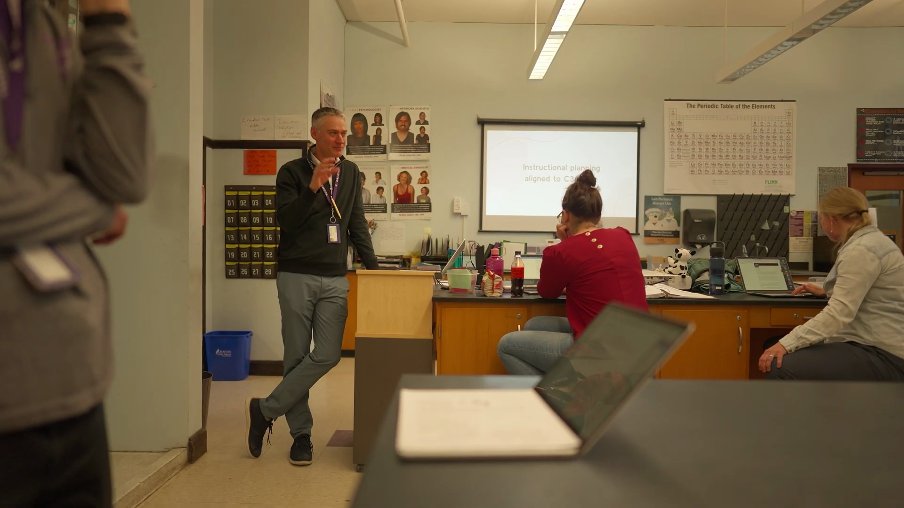
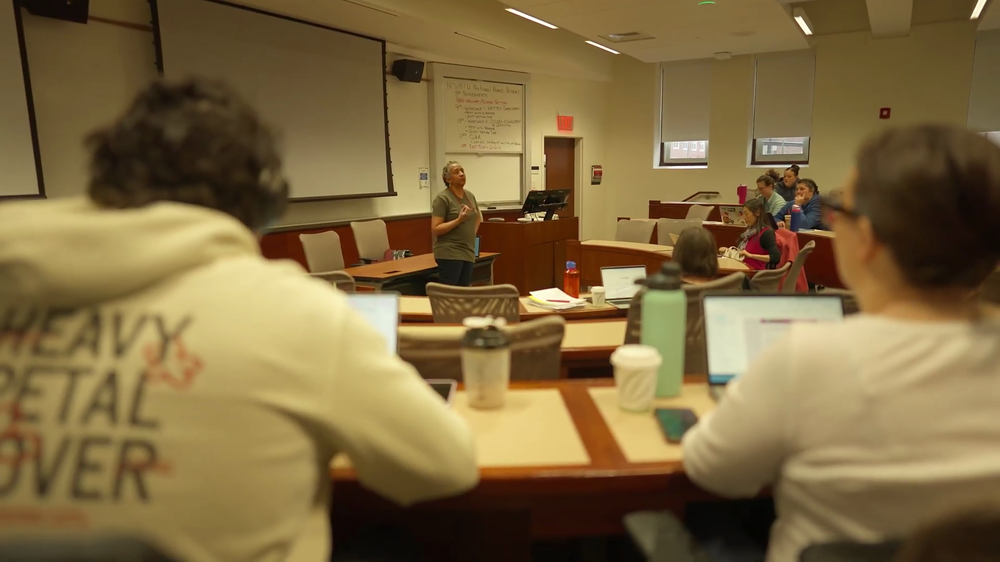
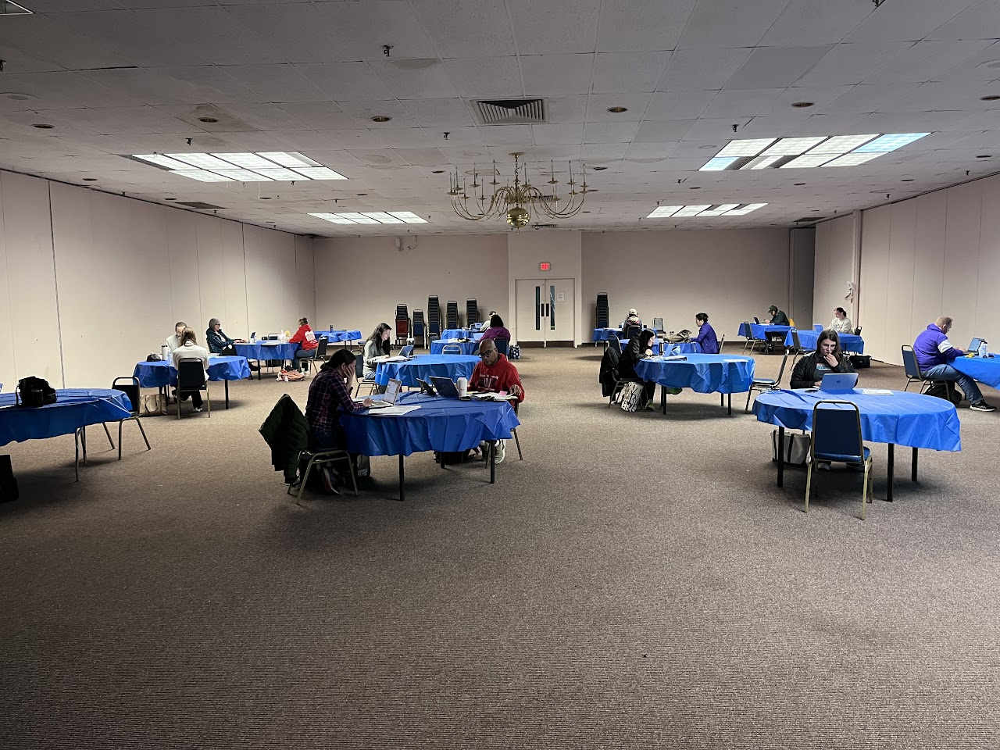

Boston educators. Greater possibilities.
Great teaching.
Greater
possibilities.
Your next chapter in accomplished teaching starts here.






Where are you in your journey?
Getting
started
Curious about National Board Certification? Learn what it is, who it’s for, and how it can deepen your practice and impact.
Explore certificationWorking toward
certification
Already on the path? Find guidance, resources, and collegial support to keep your work focused, manageable, and meaningful.
Find your supportAlready
certified
Continue to grow, lead, and make an impact. Stay connected, support colleagues, and extend your influence in Boston.
Connect with colleaguesOur educators. In their own words.
See the work.
Feel the possibility.
Step inside the Boston National Board community and see how reflection, collaboration, and shared purpose bring professional learning to life.
Keep the conversation going
Stay connected to
what’s next.
Ask about program updates, support opportunities, and ways to get involved in our community.
Get program updates
Space to reflect. People to grow with.